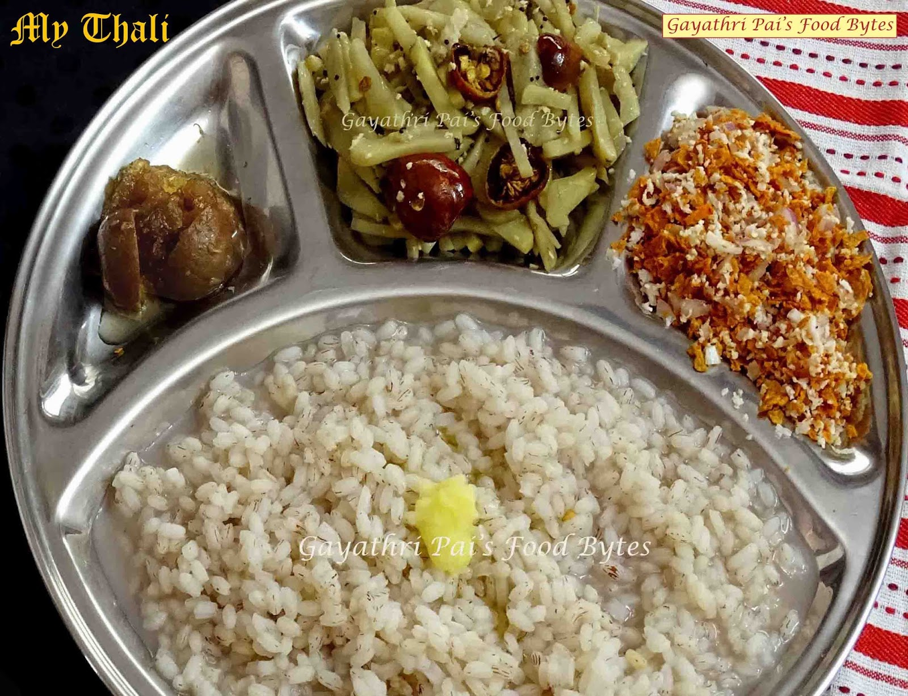

Pyaja

Pyaja is good for health, specially in costal areas. You can have it anytime of the day as breakfast, lunch or dinner. Spicy pickle, ody, happolu can make deadly combination.
Ingradients
- Boiled rice
- Water
- Salt
- Ghee
- Side dish
Steps
- Take rice and water in appropriate proportions
- Boil the rice with water remaining as nishshe
- Add salt and ghee and Enjoy!